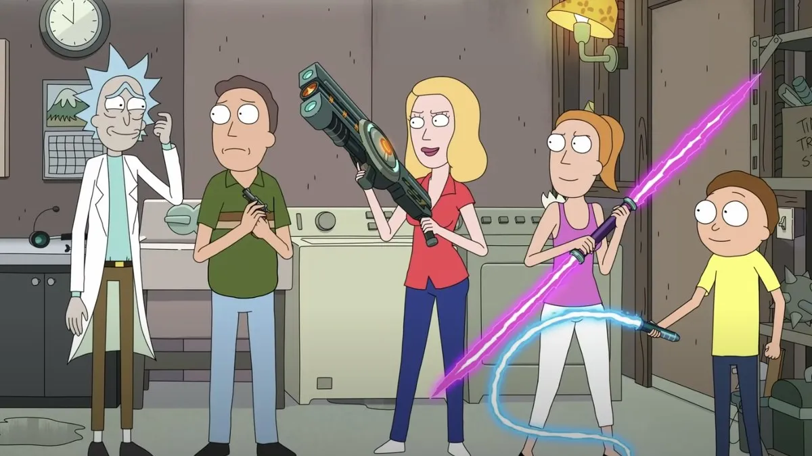

Merhaba, Ben Nursel Cansu Özkan Aşar. Ankara Üniversitesi Bilgisayar Mühendisliği 2016 mezunuyum. 7 yıllık bir iş tecrübem oldu.Bu süreçte daha çok php-laravel kullanarak full-stack web geliştirme ile ilgilendim. Şimdi ise kodluyoruz sayesinde frontend web geliştirme alanına yoğunlaşıp bu alanda daha detaylı bilgilere sahip olup ilerlemek istiyorum.
Kendime aktivite yaratmayı, hobilerimle meşgul olmayı, düzenli spor yapmayı, okumayı, izlemeyi ve gelişim halinde olmayı severim.
Kedilere bayılırım, evde 5 tanesiyle birlikte yaşıyorum.
Rick and Morty
Rick and Morty, Justin Roiland ve Dan Harmon tarafından Adult Swim için yaratılan bir yetişkin animasyon televizyon dizisidir.